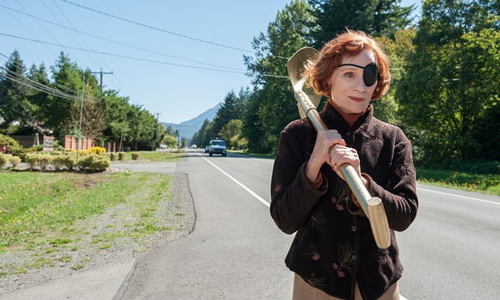
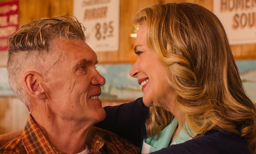
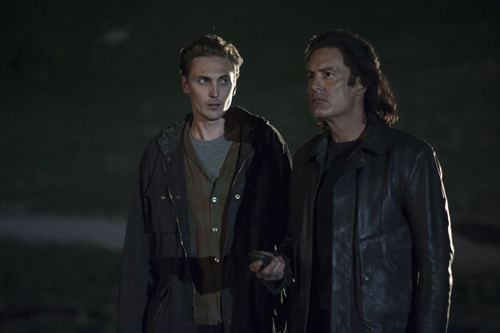

For sure, there was heartbreak and harrowing moments aplenty this week – but David Lynch also gave us the most breathtakingly exciting scene of 2017.

Twin Peaks is many things to many people. What it doesn't always get credit for is the size of its heart. But Part 15 was the most powerfully emotional yet, with a sense of things moving towards an endpoint – which stands to reason, given there are only three episodes left. The sad poignancy that the Log Lady herself, Catherine E Coulson, was dying could not be keener, but her final monologue on the phone to Hawk was unutterably moving. Aside from underlining the simple tenderness of the connections people make and the ties that bind us, the whole thing chimed ominously with the wider themes of mortality and identity at play. The fact it comes so close to Dougie apparently electrocuting himself to death can be no coincidence (more of which later). Sleep well, Margaret Lanterman.

For sure, there is heartbreak and harrowing bleakness aplenty in this helping. So we start with a sequence of wish fulfilment on a breathtaking scale, as Big Ed and Norma finally get together, and it plays like an avalanche of sweet relief. As Nadine earnestly marches over to Ed's she reveals that, inspired by Dr Amp to shovel herself out of the shit, she's setting him free. Rushing to the diner, he sits forlorn, thinking he's missed his moment, before Norma extricates herself from that creepy corporate dude and the couple finally get their time – all sunshine, blue skies and Otis Redding. There may have been a more fist-pumping moment on television this year, but I can't think of it.

Sadly, things are still no sweeter for Audrey, who is now three weeks into the same conversation and still dithering about whether to go to the Roadhouse. This portrait of passive aggressive abuse gets more uncomfortable as it goes on. Despite all her urges, she still won't, or can't, go looking for Billy. And as so often with this show, the truth and the action has all happened off-screen. There must be a point to this: will this room be the only place we see Audrey? And in fact, who is Billy? She might be boiling over with rage, but she cannot express herself. It's Charlie pulling all the strings.
As things coalesce, we do at least learn that Richard is indeed her son and now in league with Evil Coop. And, thanks to the suggestion of Phillip Jeffries (now in teapot form), we are forced to contemplate the awful prospect that this guy may have been the real Agent Cooper all along. Especially as Dougie – in a moment of recognition from hearing the name Gordon Cole on a rerun of Sunset Boulevard – finally displays some free will, his first instinct to apparently commit a messy suicide. Three weeks to go, and in whatever form, Agent Dale Cooper is finally making his return to Twin Peaks. There's no going back now.